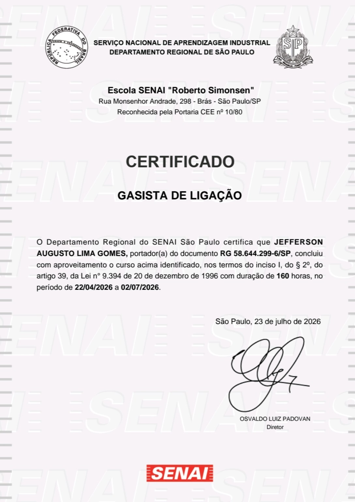

01 / MANUTENÇÃO
Troca de resistência
Serviço de substituição e verificação do equipamento, conforme o modelo e a necessidade.
Consultar serviço ↗Instalação, manutenção e ajustes em sistemas a gás com atenção aos detalhes e compromisso com a segurança.
Do ajuste ao serviço de manutenção, conte com atendimento profissional e explicações claras em cada etapa.
Serviço de substituição e verificação do equipamento, conforme o modelo e a necessidade.
Consultar serviço ↗Avaliação e ajuste para ajudar o equipamento a funcionar de maneira adequada.
Consultar serviço ↗Conversão de fogão de gás engarrafado para gás canalizado, conforme compatibilidade técnica.
Consultar serviço ↗Atendimento para avaliar a sua necessidade e indicar a solução adequada.
Consultar serviço ↗Conheça alguns dos serviços realizados pela Jota Gás. Assista aos vídeos e veja o trabalho na prática.
Veja como é realizado o serviço.
Comparação visual do trabalho realizado.
Regulação de equipamento industrial.
Serviço de conversão de fogão.

Certificado profissional · SENAI São Paulo
Compromisso com a formação profissional, a responsabilidade e a qualidade em cada atendimento.
Conte o que você precisa e solicite seu orçamento diretamente pelo WhatsApp.
Conversar pelo WhatsApp ↗Envie uma mensagem, tire suas dúvidas e combine os detalhes do serviço.
JOTA GÁS Instalações e manutenção profissional